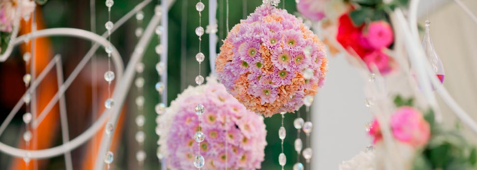

Самый главный плюс выездной регистрации - возможность сделать свадьбу не шаблонной, а провести её в лучших европейских традициях, как в красивой сказке или в кино. Выездная регистрация брака открывает воистину широкие возможности для стилизации церемонии бракосочетания и украшения места для ее проведения: белоснежная арка, увитая цветами, дорога счастья, цветы, лепестки роз - все зависит только от ваших пожеланий и фантазии. Выездную церемонию Вы можете провести как в зале ресторана, где будет проходить банкет, так и в более экзотических местах: в парке, на берегу, на высотной террасе или просто на зеленой лужайке. Вы не будете ограничены ни временем, ни местом, что в день свадьбы имеет очень важное значение.
Но следует учесть, что загородная церемония потребует дополнительный транспорт для перевозки гостей, а также запасной вариант на случай плохой погоды (шатёр, беседка). Можно провести торжественную церемонию, фуршет, свадебную фотосессию и праздничный ужин в одном месте, как это принято в Европе, и не будет необходимости разъезжать по всему городу.
Одним из лучших способов декорирования арки, ширмы или беседки для выездной церемонии однозначно является оформление живыми цветами. Пьянящее благоухание роз, гортензий и многих других цветов поможет создать еще более романтичную и волшебную атмосферу для выездной регистрации. Но, не секрет, что оформление живыми цветами является достаточно дорогостоящим, и если Вы не планируете выделять большую сумму из свадебного бюджета на флористиче ское оформление, то мы сможем предложить Вам оформление арки тканями, лентами и другими элементами декора.
Наши специалисты с удовольствием помогут подобрать место для выездной церемонии и создать потрясающую атмосферу, которая, бесспорно, поразит гостей и спустя много лет её будут вспоминать с восхищением! Ну и конечно же, выездная церемония в нашей стране — это показатель высокого статуса торжества.
Студия свадебной флористики и декора Flowers Fantasy c удовольствием оформит и поможет в организации выездной регистрации брака. Мы предлагаем:
- оформление выездной регистрации тканями: украшение арки для регистрации, столика регистратора, чехлы и банты на стулья, дорожка к арке.
- оформление цветами: украшение цветочными композициями арки, столика регистратора, посадочных мест гостей, колонн, лепестки роз.
- оформление выездной регистрации воздушными шарами: арки из шаров, сердца и композиции из шаров, запуск шаров.
- подбор площадки для проведения выездной регистрации, организацию выездной регистрации "под ключ" с приглашением регистратора, музыкального сопровождения, опытных актёров в образе Купидона или Амура, фотографа, с запуском голубей и реализацию многих других Ваших пожеланий.
Стоимость оформления зависит от количества используемых элементов, от количества и вида цветов, шаров, от сложности композиций, поэтому стоимость каждого проекта рассчитывается индивидуально.
